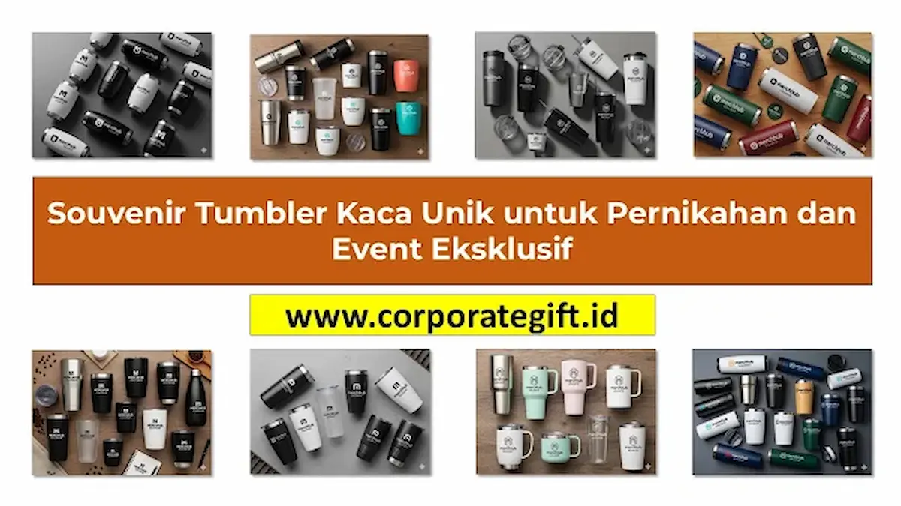

Daya Tarik Tumbler Kaca sebagai Cinderamata Eksklusif
Corporate Gifts ID - Dalam ranah pengadaan cinderamata korporat modern, tren pemilihan botol minum minum tidak lagi terbatas pada bahan logam maupun polimer plastik konvensional. Souvenir tumbler kaca berbahan tempered glass atau high-borosilicate glass kini menjadi primadona baru untuk perhelatan bergengsi seperti gala dinner perusahaan, perayaan anniversary korporasi, peluncuran produk premium, simposium dewan direksi, hingga resepsi pernikahan intim.
Kaca memancarkan aura kejernihan yang mewah, higienis murni, dan ramah lingkungan. Bila dipadukan dengan aksen tutup kayu bambu berserat alami serta sarung pelindung (sleeve) berbahan silikon lembut atau rajutan kulit sintetis, tumbler kaca bertransformasi menjadi karya seni fungsional yang bernilai persepsi sangat tinggi di mata penerima.
Keunggulan Material Kaca Dibandingkan Plastik dan Stainless
Mengapa banyak institusi dan korporasi kini melirik tumbler kaca untuk acara eksklusif mereka? Berikut lima keistimewaan struktural material kaca:
- Tampilan Mewah dan Berkelas: Sifat transparan kaca memberikan impresi bersih, modern, dan sangat estetis saat diisi air mineral, jus segar, maupun racikan infused water buah-buahan.
- Netral Rasa dan 100% Bebas Bahan Kimia: Kaca bersifat non-porous (tidak berpori) sehingga sama sekali tidak menyerap bau, noda, maupun rasa asam dari minuman kopi atau lemon. Material ini sepenuhnya bebas BPA, phthalate, dan zat kimia berbahaya lainnya.
- Ketahanan Suhu Ekstrem (Borosilicate): Kaca jenis borosilikat mampu menahan lonjakan suhu drastis (thermal shock) mulai dari -20°C hingga 150°C tanpa risiko retak mendadak saat dituangkan air panas mendidih.
- Mendukung Pesan Keberlanjutan (Eco-Friendly): Dapat digunakan berulang kali hingga bertahun-tahun serta 100% dapat didaur ulang tanpa menurunkan kualitas material dasarnya.
- Menaikkan Prestise Institusi: Bobot mantap dari material kaca memberikan rasa solid saat digenggam, menegaskan bahwa perusahaan memberikan hadiah yang benar-benar berbobot dan bernilai tinggi.

Kustomisasi tumbler kaca borosilicate dengan kemasan rigid hardbox eksklusif untuk corporate gift VIP.
Tips Memilih Souvenir Tumbler Kaca yang Tepat dan Aman
Memilih tumbler kaca untuk acara institusi memerlukan ketelitian ekstra pada aspek keamanan fisik produk. Terapkan lima parameter kurasi berikut:
- Prioritaskan Kaca Borosilikat Dinding Ganda (Double Wall): Struktur dinding ganda berfungsi ganda: menjaga suhu minuman lebih stabil serta mencegah permukaan luar botol terasa terlalu panas atau basah akibat kondensasi embun dingin.
- Pilih Desain dengan Sleeve Pelindung: Pastikan botol dilengkapi sarung pelindung silikon anti-slip atau sleeve gabus alami (cork sleeve). Elemen ini melindungi kaca dari benturan ringan saat diletakkan di atas meja kerja.
- Kapasitas Ideal 350 ml - 450 ml: Kapasitas ini paling ergonomis untuk mobilitas harian para tamu undangan, tidak terlalu berat di tangan, dan pas diletakkan pada holder kendaraan.
- Pastikan Tutup Kedap Udara (Leakproof): Pilih penutup yang dilengkapi seal cincin silikon food-grade presisi agar tidak bocor saat dimasukkan ke dalam tas ransel atau tas jinjing kerja.
- Kualitas Cetak Branding Tahan Cuci: Gunakan teknologi sablon ceramic bake atau UV curing yang tahan terhadap gesekan sabun pencuci piring harian.
Penerapan Tumbler Kaca pada Acara Korporat dan Eksklusif
Tumbler kaca memiliki fleksibilitas luar biasa untuk berbagai agenda perhelatan resmi dan prestisius:
- Gala Dinner & Malam Penganugerahan VIP: Menjadi souvenir personal bagi dewan direksi, mitra strategis, dan pemegang saham utama yang diserahkan dalam bingkai hardbox mewah.
- Peluncuran Produk Perawatan Kulit & Wellness: Sangat selaras dengan brand kecantikan, klinik estetika, dan produk organik karena merefleksikan nilai kemurnian, kesehatan, dan hidrasi alami.
- Workshop Eksekutif & Simposium: Pengganti botol plastik sekali pakai di ruang sidang rapat kerja untuk mendukung inisiatif Green Office dan program ESG perusahaan.
- Cinderamata Pernikahan Eksklusif: Hadiah berkesan bagi para kerabat dekat berukir inisial nama mempelai dan tanggal bahagia yang anggun.
Tabel Perbandingan Tumbler Kaca vs Stainless vs Plastik
Gunakan tabel perbandingan karakteristik material botol minum berikut untuk menentukan pilihan paling relevan dengan profil acara Anda:
| Karakteristik Produk | Tumbler Kaca Borosilikat | Tumbler Stainless Steel SUS 304 | Tumbler Plastik BPA-Free |
|---|---|---|---|
| Kesan Visual & Estetika | Sangat Mewah, Transparan, Eksklusif & Artistik | Modern, Kokoh, Sporty & Elegan Minimalis | Kasual, Praktis, Ringan & Colorful |
| Kemurnian Rasa Minuman | Sempurna (100% Netral, Tanpa Aftertaste Logam) | Sangat Baik (Bisa Terasa Sedikit Nuansa Logam Jika Asam) | Cukup (Beresiko Menyerap Bau Kopi atau Teh Lama) |
| Ketahanan Benturan | Sedang (Perlu Perlindungan Sleeve & Hardbox) | Sangat Tinggi (Tahan Banting & Tidak Mudah Penyok) | Tinggi (Lentur & Tahan Jatuh Harian) |
| Ketahanan Suhu | Tahan Panas s/d 150°C (Thermal Shock Resistant) | Insulasi Vakum Suhu Panas/Dingin 12-24 Jam | Terbatas Suhu Hangat (-10°C s/d 80°C) |
| Rekomendasi Acara | Gala Dinner, Event VIP, Launching Produk, Wedding | Seminar Korporat, Onboarding Karyawan, Gathering | Fun Run, Promosi Massal, Acara Komunitas Kampus |
Strategi Kustomisasi Branding dan Packaging Eksklusif
Sentuhan akhir kemasan memegang peranan kunci dalam mengunci impresi premium dari souvenir tumbler kaca:
- Grafir Laser pada Tutup Bambu: Membakar serat kayu bambu dengan teknologi laser presisi menghasilkan logo monokrom bertekstur alami yang sangat artistik dan tidak akan pernah luntur.
- Sablon Semi-Transparan (Frosting Decal): Memberikan efek kaca es (frosted) dengan siluet logo minimalis yang tampak menyatu dengan keindahan badan kaca.
- Kotak Rigid Hardbox dengan Magnet: Kemasan luar berbahan karton tebal berlapis kertas fancy bertekstur, berpenutup magnetik, serta dilengkapi busa cetak (sponge mould) di dalamnya menjamin produk aman dari getaran ekspedisi.
- Kartu Ucapan Personalisasi: Sematkan kartu ucapan resmi berlogo korporat yang memuat narasi terima kasih dan pesan keberlanjutan ramah lingkungan.
Kesimpulan Praktis
Memilih souvenir tumbler kaca untuk event eksklusif perusahaan adalah pernyataan komitmen terhadap mutu, keanggunan, dan gaya hidup sehat ramah lingkungan. Dengan material borosilikat yang aman, aksen alami kayu bambu, serta kemasan hardbox protektif, hadiah ini akan terus digunakan dengan bangga oleh klien penting dan kolega terhormat Anda.
Wujudkan pengadaan souvenir tumbler kaca berkualitas tinggi bersama CorporateGifts.ID. Konsultasikan rancangan desain Anda melalui form permintaan penawaran resmi (RFQ) atau telusuri aneka paket cinderamata eksklusif pada katalog merchandise kami.
Pertanyaan Seputar Souvenir Tumbler Kaca (FAQ)

Ditulis oleh: Sholikhatun Nikmah
Creative Product Designer & Bespoke PackagingSholikhatun Nikmah adalah desainer produk dan kemasan suvenir korporat yang berfokus pada integrasi material berkelanjutan, estetika packaging ramah lingkungan, serta perancangan merchandise institusi eksklusif.
Lihat Profil Lengkap & Panduan Lainnya